Set, get, or view color schemes. Choose from a preset scheme or create a custom scheme.
color_scheme_set(scheme = "blue") color_scheme_get(scheme, i) color_scheme_view(scheme)
| scheme | For For For Currently, the available preset color schemes are:
If you have a suggestion for a new color scheme please let us know via the bayesplot issue tracker. |
|---|---|
| i | For |
color_scheme_set has the side effect of setting the color
scheme used for plotting. It also returns
(invisibly) a list of the hexidecimal color
values used in scheme.
color_scheme_get returns a list of the hexadecimal color
values (without changing the current scheme). If the scheme argument
is not specified the returned values correspond to the current color
scheme. If the optional argument i is specified then the returned
list only contains length(i) elements.
color_scheme_view returns a ggplot object if only a single scheme is
specified and a gtable object if multiple schemes names are specified.
A bayesplot color scheme consists of six
colors. To specify a custom color scheme simply pass a character vector
containing either the names of six colors or six
hexidecimal color values (or a mix of names and hex values). The colors
should be in order from lightest to darkest. See the end of the
Examples section for a demonstration.
theme_default for the default ggplot theme used by
bayesplot.
color_scheme_set("blue") color_scheme_view()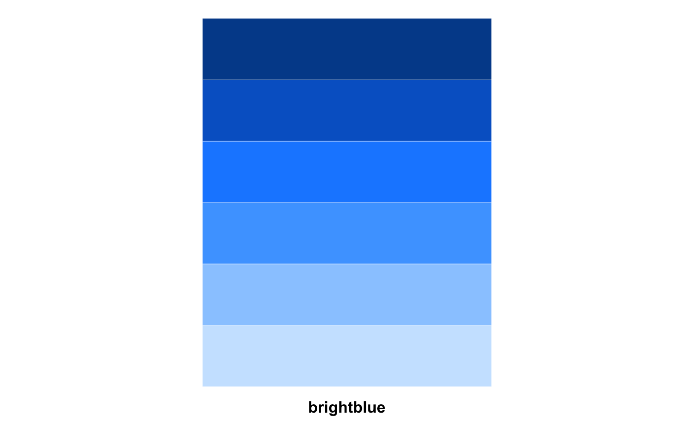color_scheme_get()#> blue #> 1 #d1e1ec #> 2 #b3cde0 #> 3 #6497b1 #> 4 #005b96 #> 5 #03396c #> 6 #011f4bcolor_scheme_get(i = c(3, 5)) # 3rd and 5th colors only#> $mid #> [1] "#6497b1" #> #> $dark #> [1] "#03396c" #>color_scheme_get("brightblue")#> brightblue #> 1 #cce5ff #> 2 #99cbff #> 3 #4ca5ff #> 4 #198bff #> 5 #0065cc #> 6 #004c99color_scheme_view("brightblue")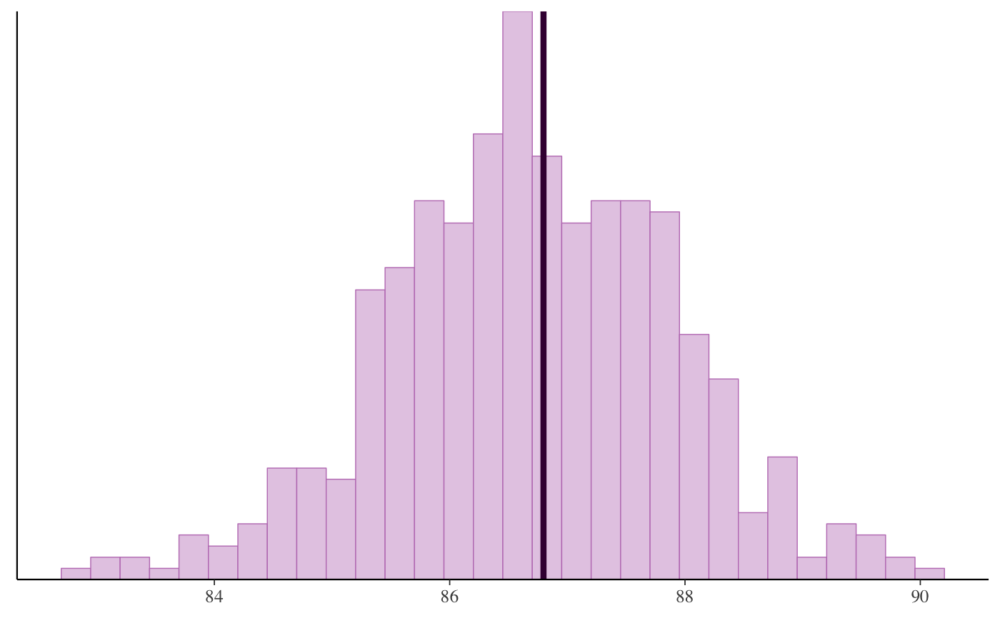# compare multiple schemes color_scheme_view(c("pink", "gray", "teal"))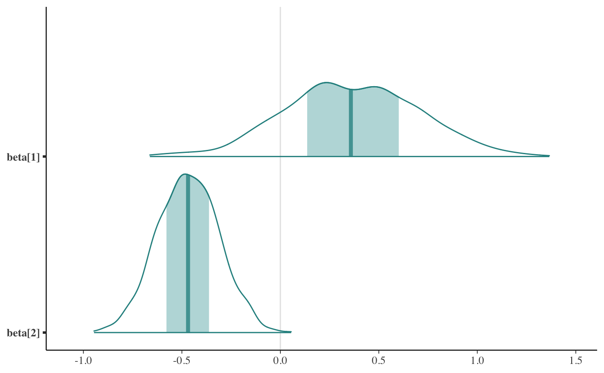color_scheme_view(c("viridis", "viridisA", "viridisB", "viridisC"))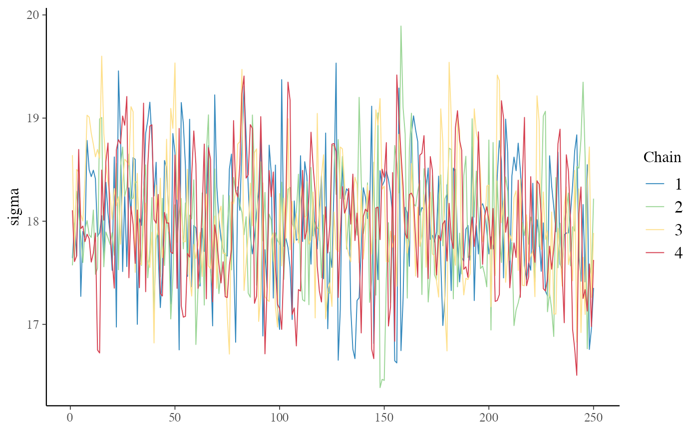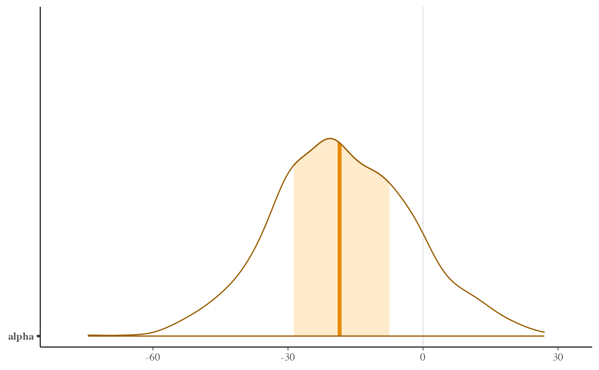color_scheme_set("teal") color_scheme_view()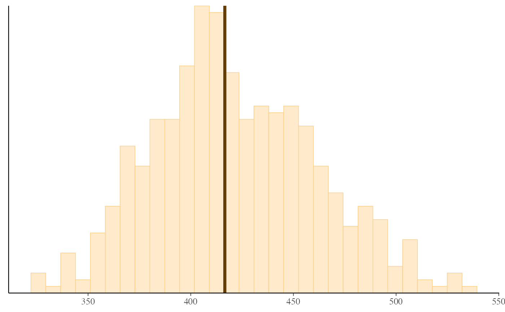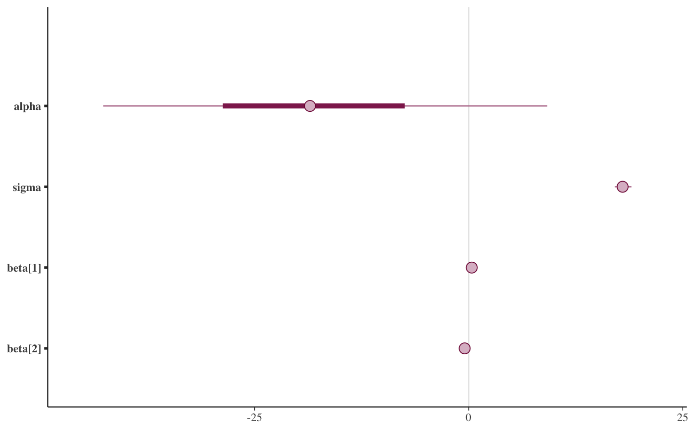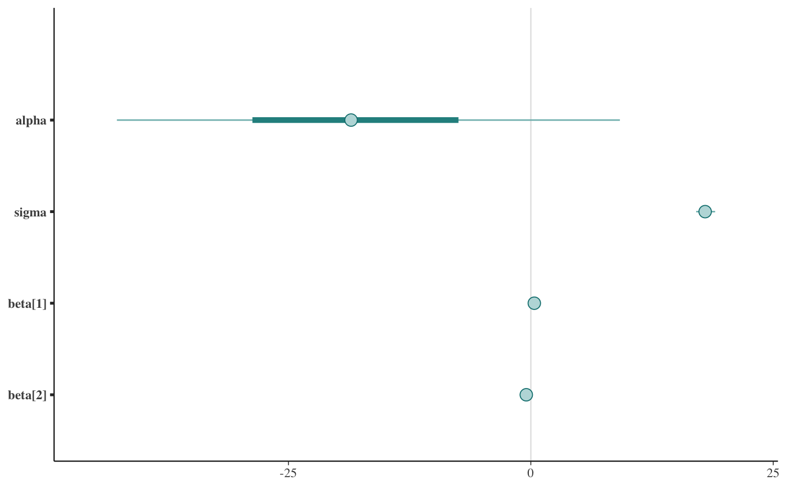color_scheme_set("purple") color_scheme_view()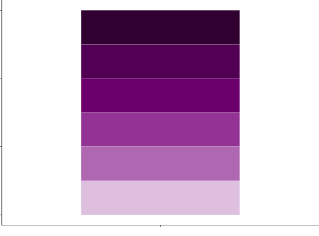#>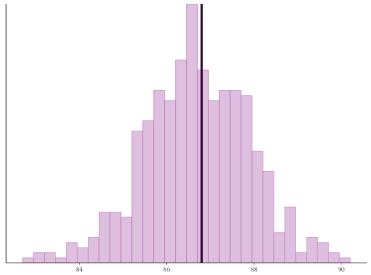#>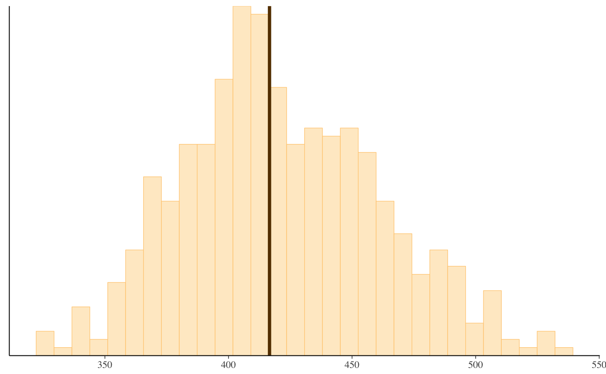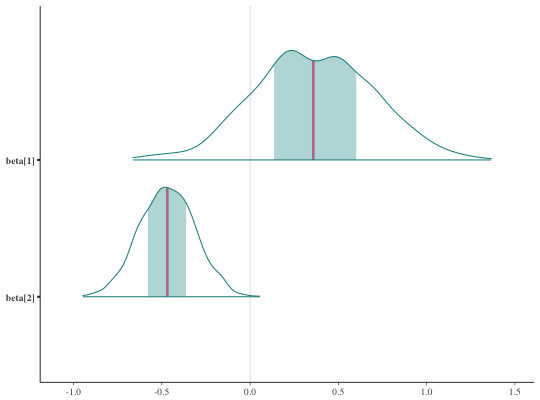########################### ### custom color scheme ### ########################### orange_scheme <- c("#ffebcc", "#ffcc80", "#ffad33", "#e68a00", "#995c00", "#663d00") color_scheme_set(orange_scheme) mcmc_areas(x, regex_pars = "alpha")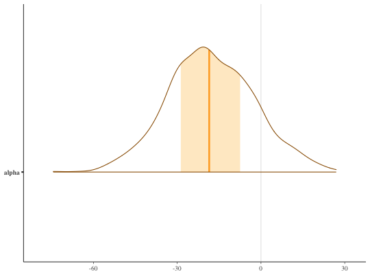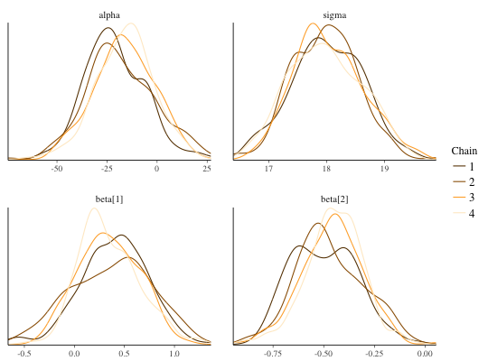#>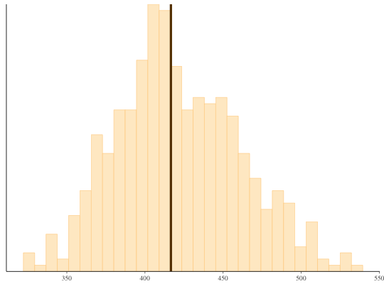